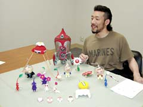
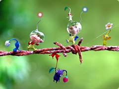
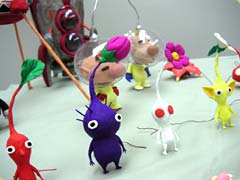
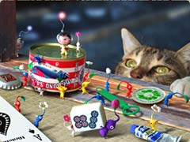
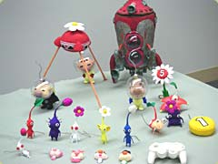
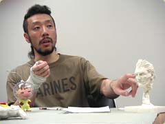
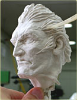
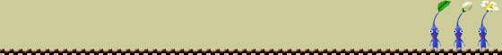

|
| N.O.M 普段はどういった作業をされているんですか？ |
| 山口 アートワークといって、イラストや製品パッケージ、ポスターや取説、広告なんかを幅広く制作しています。最近は全般的な監修に回ることも増えましたが、まだまだ現場作業をやっています。近年ではマリオファミリーのイラスト監修にも携わらせてもらっています。 |

| N.O.M 『ピクミン２』の粘土細工は、ひとりでされたんですか？ |
| 山口 ひとりです。作って、色塗って、撮影して、合成…というのをやらねばならなかったんですが、普通に考えたらちょっとおかしいかもしれませんね。ピクミンのような大きなタイトルのアートワーク進行を担ったうえで、果たしてそれがひとりでできるのか？という不安もありました。でも「自分でやりたい」という気持ちの方が不安よりもはるかに強かったんです。はじめ宮本（代表取締役情報開発本部長）から「外注にしたら？」って言われちゃいましたが、クリエイティブへの情熱には理解のある人ですから最後は「やってみろ」って。うれしかったなあ。宮本に「これどうやって作ったん？」とか聞かれた時は「わーい」って思いました。だから信頼を裏切らないためにも、なにがなんでもやり遂げなくてはならなかったんです。 |
| N.O.M 今回のこの制作で特に頭に置いていたことはなんでしょうか。 |
| 山口 ぬくもりを届けることです。前作のイラストは全てCGでどことなく冷たい印象だったんで、ゲームスタッフからも何かもっと暖かい表現はできないかな、という声が上がっていました。今回、手製のクレイにすることで愛情はたっぷりこめられたと思います。やさしいとか、せつないとか、人間に何か語りかけてるとかいった、そういう何かしら見る人の感情をうごかせる力のあるものを目指しました。もうひとつ、クレイという素材は、味のある反面ヘタするとものすごく子供っぽい表現になってしまう。だからデザイン面ではスタイリッシュに仕上がるよう特に気を遣いました。 |
| N.O.M では、大変だったところはどういった部分でしょう |
| 山口 作り手というのは、作るものに対して愛情を持っていなくては絶対にダメなんです。僕らが広告やCMなんかを見て「いいな」と思えるものって、作り手が本当に楽しんで作ってると感じられるものなんですよね。そういう意味でどんなに忙しくても「ピクミンへの愛を長期にわたって持続させ続けること。」それが最も重要なポイントでした。とにかく毎日が時間との闘いです。スピード、量、クオリティがきちんと保たれていなくてはならない。そうなってくると、段々とピクミンに愛情を感じてる時間が減ってきます。気がつくとピクミンのことをあまりかわいく思えなかったりして…もっと言うと、めちゃめちゃ憎たらしくなったりもして（笑）。だから「ピクミンはかわいいな」といつもいつも思いながら作業し続ける、というのがいちばん大変でした。 |
|
|
| N.O.M ひとりで撮影もされていたということで、苦労されたと思うのですが…。 |
| 山口 「この場所いいなあ」と思って、公園なんかに繰り出してピクミンを配置しますよね。そうすると幼稚園児とかがわらわら寄ってきて、「ワー、なんやこれー」って(笑)。慌てて拡げたものを全部回収して逃げて、みたいなことをやってました。だから背景は合成にしたわけですが、結果的にはそのほうが合理的で正解だったんです。今回いろんなプロモーションで、外部の方にクレイモデルをお貸しすることがあった時にいろいろお話を伺ったのですが、ロケ班とかって撮影行くのに５人もスタッフがいるそうで、本当にいいなあ〜って思いましたよ（笑）。撮影だけでなく全てがひとりですから「クレイを乾燥させてる間にメールをチェックして、それを回してる間に今度はこれとこれを…」という感じで、並行して他のいくつもの作業をしていました。プレイヤーはフル稼働、まさにゲームの『ピクミン２』と同じですね。あ、でもこっちは時間制限あり！プレイヤーもひとり！なので『ピクミン１』のほうですね(笑)。 |
| N.O.M 撮影ではあちこちへ出かけられたんですね。 |
| 山口 植物園とかに出かけて、大の字になって寝ころんで大空を見上げた時、「自分はちっぽけだなぁ。ピクミンと変わらないんじゃないか？」ってふと思ったりしたんです。そういう意味ではピクミンに励まされたりとかもしました。「俺もがんばって生きていかなしゃーないなあ」って。 |
| N.O.M ピクミンのほかにはどういったものを手がけてらっしゃいますか？ |
| 山口 最近では『1080°シルバーストーム』のキャラクタイラストなんかも描いてました。ピクミンとずいぶんかけ離れているとよく言われますが、制作時期が被っていたこともあって、僕からしたら両方ともそんなにかわらない。ピクミン達がかわいいのと同様に、ロブ・ヘイウッドのことも自分の分身のように感じます。 |
| N.O.M 学生の頃から造形をされていたんですか？ |
| 山口 専攻はグラフィックデザインでしたけど、芸術って結局総合的なものでしょ。だから絵も彫刻も音楽だって僕にとっては同じなんです。学生の頃はそういった枠に捕われないことを信念にいろいろやってました。作品数だけは多かったですよ。 |
| N.O.M 日頃、腕を磨くための努力なんかはされているんですか？ 家でも絵を描くとか… |
| 山口 プロである以上、努力するのは当たり前ですが、あとはやっぱりセンスひとつというのも大きいと思います。世界はホント広くて、無名でもすごい才能を持ってる人はごろごろいますからね。でも天才と言われるような人ほど逆に影で努力しているものだとも思います。ミケランジェロなんて神の域です。大理石削り出しですよ。 |
| N.O.M では最後に。もの作りに、いちばん大切なことはなんでしょう。 |
| 山口 えらそうなことは何も言えませんが、少なくとも僕の場合は目指す目標が大きければ大きいほど逆に燃えます。好きであることは最低条件。創ることに対しての愛や情熱を持ち続けること。それがいちばん大切だと信じています。 |
|
|
|
|
|
|
今日は昼休みを利用して
GCソフト「1080°シルバーストーム」のキャラクター、
ロブ・ヘイウッドも作ってみました。
このオフィシャルイラストも私が描いています。
こちらもクールで熱いゲームですので是非遊んで下さい！
→『1080°シルバーストーム』公式サイト
「華麗なプレイ！」も公開されています。 |
 |
|
|
|
|
|
|
